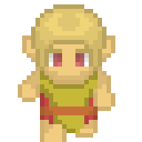

Os Elfos, conhecidos coletivamente como Faer'Sidhe, foram o primeiro dos povos fada (Faer) a chegar em Rhaokar, sendo membros das Cortes das Estações.
Os Tahar'Sidhe e Nihar'Sidhe pertencem a Corte da Primavera.
Os Lahar'Sidhe, Mahar'Sidhe (elfos aquáticos) e Sihar'Sidhe, pertencem a Corte do Verão.
Os Uldhar'Sidhe e Cahar'Sidhe são da Corte do Inverno
Os Faehar'Sidhe são da Corte do Outono, os registros elficos no mundo das fadas dão conta dos Gehar'Sidhe, os Elfos da Montanha, como outro grupo na corte do Outono, mas não se sabe o que aconteceu com eles.
Os Irhar'Sidhe não fazem parte de nenhuma das cortes e parecem não possuir nenhuma ligação com os outros elfos exceto pelo nome dado a eles.
Os Tahar'Sidhe, vivem nas florestas de Aetheomir e são seus principais residentes, fazendo suas casas nas gigantescas árvores da floresta, todos os Elfos da Floresta possuem alguma característica animal e uma ligação forte com o tipo de animal escolhido.
Os Lahar e Mahar Sidhe
Os Lahar'Sidhe, ou elfos de água doce vivem em lagos profundos e grandes rios espalhados pelo mundo, constroem suas casas com madeira submersa e algas, tendem a fazer comércio com os povos da superfície vendendo peixes dos lagos onde vivem, desde que os locais preservem e cuidem do lago ou rio, suas comunidades mais conhecidas ficam nos grandes lagos de Aetheomir.
Os Mahar'Sidhe, ou elfos do mar, vivem nos recifes de coral por todo o mundo, constroem suas casas de coral modelado para crescer nos formatos das construções.
Fisicamente, ambas as espécies são totalmente idênticas, mas eles acham que esse tipo de afirmação é extremamente racista, visto que as diferenças entre eles é terrivelmente evidente.
Os Sihar'Sidhe, os elfos da areia ou Elfos Coroados, são os moradores do Deserto de Catarna, são nômades que vivem em pequenas comunidades vagando pelo deserto como mercadores.
Possuem pele de cor laranja e cobre, com listras intrincadas em vários tons de vermelho, todos eles tem uma coroa de chifres envolta da cabeça, o que lhes rende a alcunha de Elfos Coroados, esses chifres são mais proeminentes nos macho que nas fêmeas.
Os Cahar'Sidhe
Vivem nas profundezas da terra, ao contrário de duas contrapartes de outros mundos, não são inerentemente malignos, mantém comércio com os Gnomos das Profundezas e com os Anões.
Os Nihar'Sidhe, os Elfos noturnos são raros por todo o mundo, vivem em templos nos arquipélagos, mas raramente se aventuram fora de suas florestas
Os Irhar'Sidhe, são os Senhores da Montanha de Ferro no Polo Sul, Estão em guerra com Ghar'Og'Grudur e são principais usuários de Magia Bélica.
Para efeitos que tornam ele um alvo e dependam do tipo (como o Favored Enemy do Ranger ou uma arma com a propriedade Bane), ele é considerado um Humanoid (elf) e um Construct
Irhar'Sidhe recebem um bônus racial de +4 em testes contra efeitos de ação mental, paralisia, venenos e Stun, não estão sujeitos a fatigue e Exhaustion e são imune a efeitos de sono e a doenças
Irhar'Sidhe não recebem bônus de Moral e são imunes a medo e a todos os efeitos baseados em emoções
Os Uldhar'Sidhe, ou Uldras, são nomades das tundras do polo norte, não mantém nenhum acampamento fixo.
Os Faehar'Sidhe, são os principais moradores do reino mágico de Galorfindil